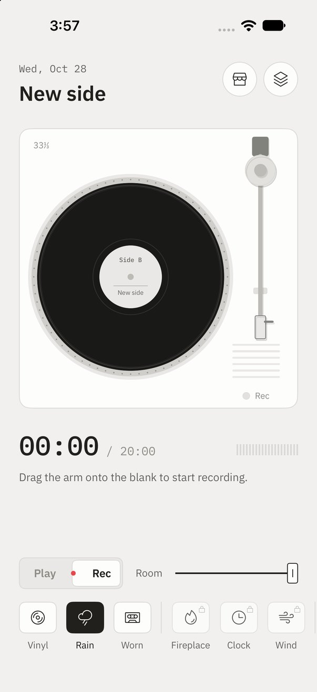
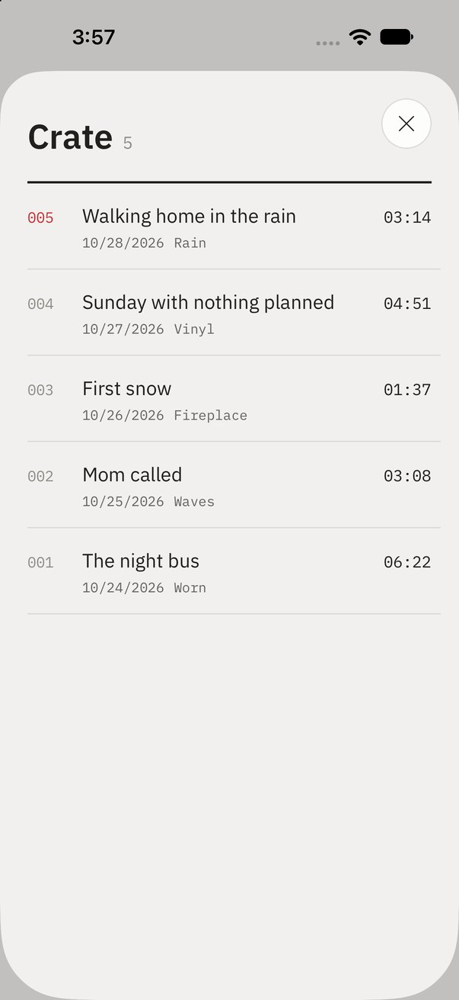

Say your day.
Play it back
on vinyl.
하루를 말하고,
레코드로
다시 듣기.
Side B is a voice diary you keep on a turntable. Drop the needle on a blank to record. Drop it on a side to hear your day again, with the crackle of the record and the rain outside mixed in as it plays. Side B는 턴테이블에 남기는 음성 일기예요. 빈 판에 바늘을 내리면 녹음되고, 새긴 면에 내리면 판 긁히는 소리와 창밖 빗소리가 섞여 그날이 다시 흘러나와요.




-
A1
Nothing starts until the needle drops바늘을 내려야 시작돼요
Drag the tonearm off its rest and lay it on the record. You hear it land and feel a heavy knock through the glass, and the side begins.톤암을 받침에서 들어 판 위에 올려놓으면, 내려앉는 소리와 묵직한 진동과 함께 재생이 시작돼요.
-
A2
Cut a blank side빈 판에 새기는 녹음
Slide the switch to Rec and drop the needle on the blank. The grooves are cut from the edge inward while you talk, and the Rec lamp pulses. Lift the arm to finish and name the side.스위치를 녹음으로 밀고 빈 판에 바늘을 내리면, 말하는 동안 바깥에서 안쪽으로 홈이 새겨지고 녹음 램프가 깜빡여요. 암을 들면 끝나고 이 면에 이름을 붙여요.
-
B1
Crackle and rain, mixed live재생할 때마다 섞는 소리
Your voice is never changed on disk. Surface noise and the room are mixed in each time you play, so the same day can sound like a rainy night, an evening by the fire or a walk by the sea.목소리 파일은 그대로 두고, 판 소리와 주변 소리를 재생할 때마다 실시간으로 섞어요. 같은 하루가 비 오는 밤도, 난롯가의 저녁도, 바닷가 산책도 돼요.
-
B2
A crate of your days하루하루가 쌓이는 보관함
Every side waits in the crate like a track list on the back of a sleeve. Pick one and it goes onto the platter; move the arm further in to skip.새긴 면은 레코드 커버 뒷면의 곡 목록처럼 보관함에 쌓여요. 하나를 고르면 턴테이블에 올라가고, 암을 안쪽으로 옮기면 건너뛰어요.
Nine rooms to play in아홉 가지 방의 소리
Three come free. Two packs add three each. Every sound is made for the app, not sampled.세 가지는 무료, 두 묶음에 세 가지씩 더 있어요. 모든 소리는 녹음해 온 게 아니라 앱을 위해 직접 만들었어요.
Free무료
- Vinyl바이닐
- Rain빗소리
- Worn낡은 판
By the Stove난로 옆
- Fireplace벽난로
- Clock시계
- Wind바람
Waterside물가
- Waves파도
- Stream시냇물
- Eaves처마
Packs, Everything (every pack, including future ones, and no ads) and Remove Ads are one-time purchases. Watch one ad to try any pack for 24 hours.묶음, '전부'(앞으로 나올 묶음까지 모두, 광고 제거 포함), 광고 제거는 한 번 결제로 사요. 광고를 한 편 보면 어떤 묶음이든 24시간 써 볼 수 있어요.
Only on your iPhoneiPhone 안에만
No account, no server. Recordings and their titles stay in the app's own storage.계정도 서버도 없어요. 녹음과 제목은 앱 저장 공간에만 있어요.
The mic only when you cut녹음할 때만 마이크
The microphone is used only while the needle is down on a blank.마이크는 빈 판에 바늘이 내려가 있는 동안에만 써요.
A quiet banner, nothing more조용한 배너 하나
The free version shows one banner under the crate. Nothing ever interrupts the deck.무료 버전은 보관함 아래 배너 하나뿐이에요. 덱 화면을 가리는 광고는 없어요.